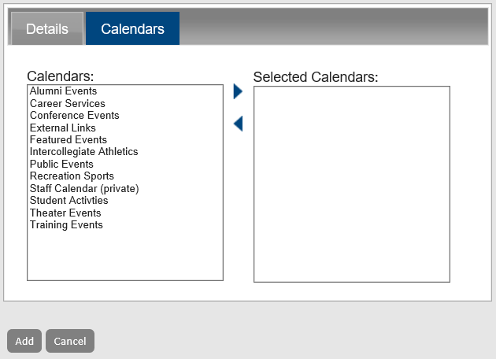

A user defined question (UDQ) is a question you can set to prompt a guest or user as part event request process. A UDQ can be optional or required, and you can assign one or more UDQs to one or more calendars of your choice. This topic guides you in adding, editing, deleting, activating and de-activating UDQs, and viewing UDQ history.
Once you add new a UDQ, you can assign the UDQ to one or more calendars.
From the Admin Panel, navigate to Admin > Configuration > User Defined Questions. The User Defined Questions page opens on the Active tab, listing all currently active UDQs in Master Calendar.
Under Actions, click Add. The Details tab opens, where you can specify information for the new UDQ.
Enter the information for the UDQ.
UDQ Details Tab Fields
| Field | Description |
|---|---|
|
Name |
The name of the UDQ. This name is displayed in a pick list on the UDQs tab for calendar configuration. |
|
Question Type |
Dropdown list with four options for the required format of the answer to the UDQ:
|
|
Default value |
A pre-assigned value for the UDQ that is displayed on the Submit Event page. A guest or user can edit this value as needed. |
|
Display Text |
The text that is displayed for the UDQ under Additional Information on the Submit Event page. |
|
Sequence |
The order in which the UDQs are displayed under Additional Information on the Submit Event page. This is a required value. If you give all the UDQs the same sequence number, then the UDQs are displayed in alphabetical order under Additional Information; otherwise, they are displayed in ascending order (Sequence 1, Sequence 2, Sequence 3, and so on). |
|
Internal |
If selected, then the question is not displayed in the event description; otherwise, the question is displayed in the event description. |
|
Response Required |
If selected, then a guest or user must answer the question before they can submit the event; otherwise, the guest or user does not have to answer the question to submit the event. If you specify a default value for a UDQ, but then make a response required, Master Calendar ignores the default value. |
Click the Calendars tab.

From the Admin Panel, navigate to Admin > Configuration > User Defined Questions. The User Defined Questions page opens on the Active tab, listing all currently active UDQs in Master Calendar.
Under Actions, click Edit. The Details tab opens.
To change the calendar the UDQ applies to, use the Calendars tab.
To delete a UDQ, from the Active or Inactive tab, select the UDQ you want to delete. To select all UDQs on the currently opened page for deletion in a single step, select Name. If you have multiple pages of UDQs to delete, you must repeat this entire process on each page.
You can delete an active or an inactive UDQ. If you delete an active UDQ, any current events that use the UDQ are not affected. The deletion simply means that going forward, the UDQ is not available for use.